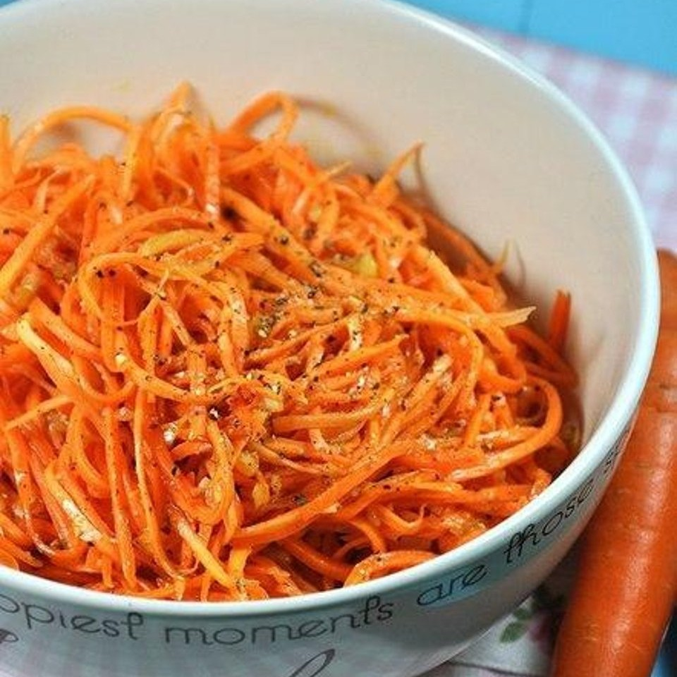

приготовление:
-
500 гр. моркови вымыть, очистить и нарезать тонкой соломкой (или натереть на терке для корейской моркови). 2-3 зубчика чеснока очистить и пропустить через чесночный пресс. 1/4 ч.л. кориандра положить раздавить. Морковь посыпать кориандром, красным и черным молотым перцем (вместо этих специй можно взять покупную смесь специй для корейской моркови), солью, щепоткой сахара, добавить чеснок.
-
1 луковицу почистить и мелко нарезать. На сковороде хорошо разогреть 50 мл. растительного масла, выложить лук и жарить, пока лук не станет зажаристо-коричневым. Лук удалить из сковороды и выбросить. Горячим маслом полить морковь и хорошо перемешать.
-
Добавить в морковь 1,5-2 ст.л. 9% уксуса и перемешать. Морковь хорошо охладить в холодильнике.